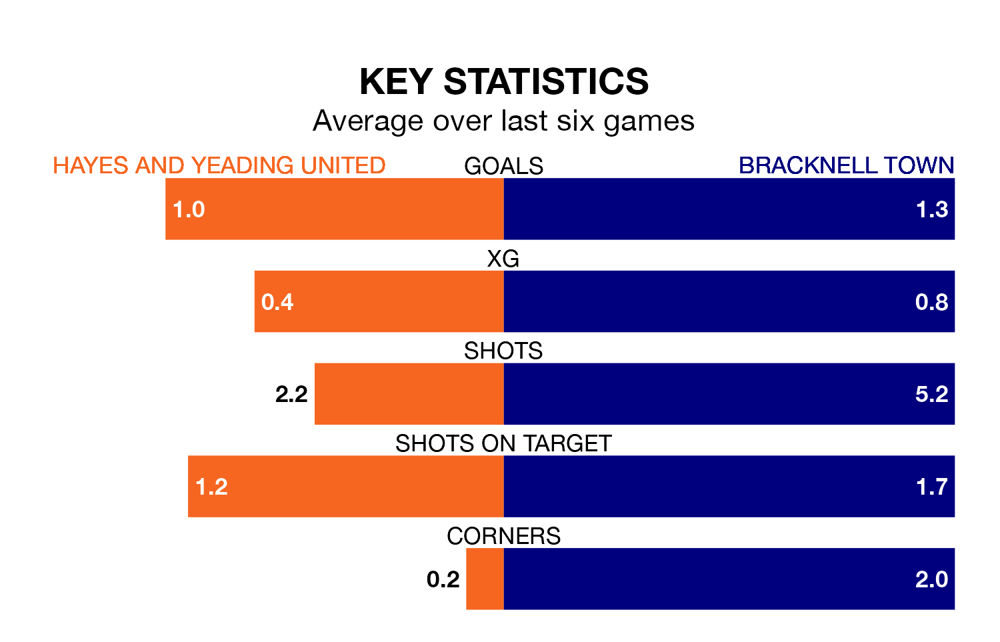

Bracknell Town are strong favourites to take all three points despite Hayes and Yeading United's home advantage in Tuesday's late match at the SKYex Community Stadium.
*Betting Company* are offering odds of 1.91 on Bracknell sealing the win, with the visitors sitting seventh in Southern League Premier South table.
Hayes & Yeading, who are 20th in the league and 15 points behind Bracknell, are priced at 3.3 to win. A draw is set at 3.5.
Hayes & Yeading are in bad form in Southern League Premier South, with no wins and three draws from their last six games.
With three wins and a draw over that period, Bracknell's form is much better – they have taken 10 points from 18, compared to United's three.
With 37 goals in 25 games so far this season, the home side are scoring at below the league average rate with 1.5 goals per game. But they are conceding fewer than average too, letting in 41 goals at a rate of 1.6 per game.
Town, meanwhile, are above average scorers, with 1.9 goals per game, compared to a league average of 1.7. They have conceded 1.6 goals per game.
Over the last two years, Hayes & Yeading and Bracknell have played each other twice. Hayes & Yeading won one of them and they drew the other.
Their last meeting was on April 4, when Hayes & Yeading won 2-1 at home.
Hayes & Yeading's last match was on Saturday, a 1-1 draw against Harrow Borough.
Bracknell lost 3-0 against Beaconsfield Town last time out, also on Saturday.
Updated: 10:03 (UTC), 30/01/24